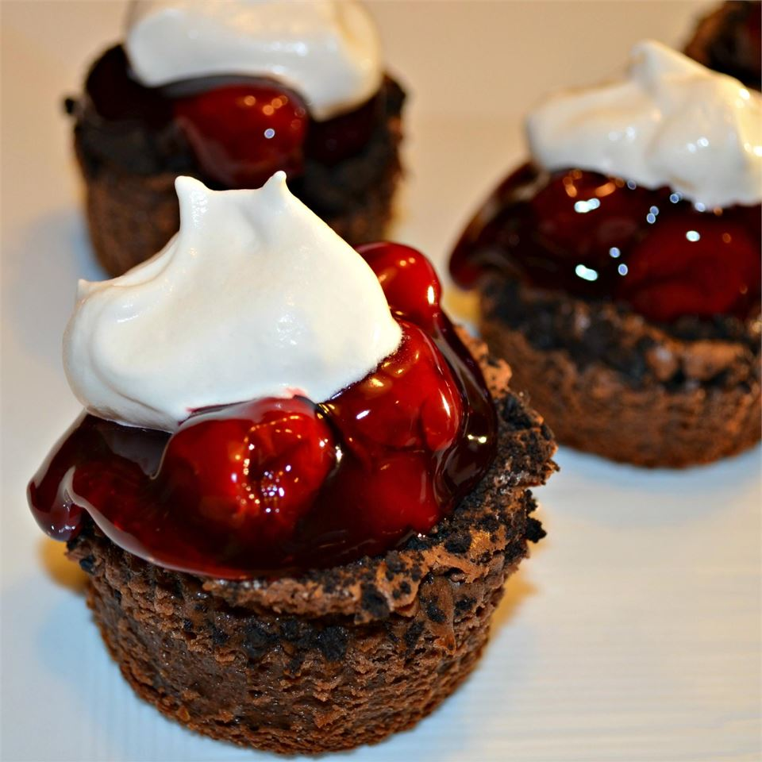

Black Forest Cheesecake

Description
A Yuletide treat, these easy mini-cheesecakes
combine the perfect match of chocolate and cherries.
Ingredients
- 12 chocolate sandwich cookies with creme filling
- 2 (8 ounce) packages cream cheese,softened
- ¾ cup white sugar
- ⅓ cup baking cocoa
- 1 teaspoon vanilla extract
- 2 eggs
- 1 (21 ounce) can cherry pie filling
- ½ cup whipped topping
Steps
- Preheat oven to 325 degrees F (160 degrees C). Line muffin cups with paper or foil muffin liners.
- Remove cookie top from each sandwich cookie; crush and set aside. Place cream-topped cookies in lined muffin cups, cream side up.
- Beat cream cheese, sugar, baking cocoa, and vanilla extract with an electric mixer in a large bowl until fluffy. Mix in eggs until blended. Fill prepared muffin cups 3/4 full; sprinkle 1/4 cup reserved cookie crumbs over top. Discard remaining crumbs or save for another use.
- Bake in preheated oven until set, 20 to 25 minutes. Cool completely; cover and refrigerate for at least 2 hours.
- Top each cheesecake with 2 tablespoons pie filling and a dollop of whipped topping just before serving.
Back to Home